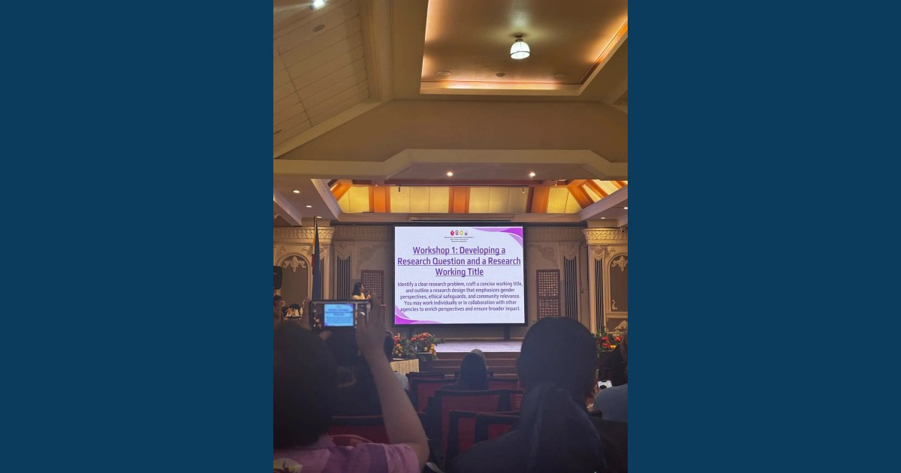

Research That Sees Everyone: Advancing Knowledge through a Gender-Responsive Lens

MCNP–ISAP personnel participated in the Regional Seminar-Training on Gender Research, held on September 9–10, 2026, at CSU Andrews Campus, Tuguegarao City. The training strengthened their capacity to develop studies that recognize diverse experiences, examine gender-related concerns, and generate evidence for more inclusive programs, policies, and practices.
Read full article